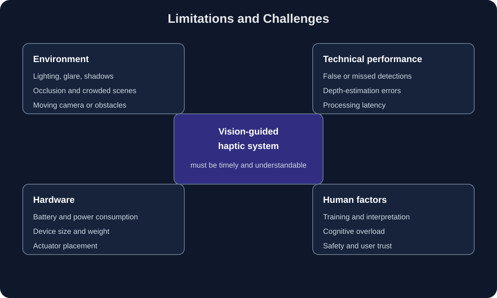

Lighting
Darkness, glare, shadows, and sudden changes in brightness can reduce the reliability of camera-based detection.
Critical evaluation
Vision-guided haptic systems must interpret uncertain visual data and convert it into feedback that users can understand quickly. Accuracy, processing speed, environmental conditions, hardware constraints, and human perception all affect the usefulness of the final system.
Computer-vision models may miss objects, produce false detections, or incorrectly estimate an object’s location. A system may recognize that an object is a person but still fail to determine whether the person is directly in the user’s path.
Depth is also difficult to estimate from a single camera. This is why systems such as the one described by Kleinberg et al. combine cameras with ultrasonic distance sensors [1].
A vision-to-haptic system must process camera frames, run its visual model, estimate spatial information, and activate a motor. If this process takes too long, the vibration may describe where an obstacle was rather than where it currently is.
Delay is especially important when objects or users are moving. A system should therefore balance model complexity with the processing ability and energy limits of the embedded hardware.
Darkness, glare, shadows, and sudden changes in brightness can reduce the reliability of camera-based detection.
Objects may be partially hidden by people, furniture, vehicles, or other objects in a crowded scene.
Camera movement and moving obstacles make it more difficult to maintain stable position and distance estimates.
Wearable systems must be small, comfortable, and energy efficient. Cameras, processors, batteries, sensors, and actuators all increase the size and weight of the device.
Motor placement also affects interpretation. A vibration on the left side of a belt may be easy to understand, but several simultaneous vibrations can become confusing. The system must limit the amount of information delivered at one time.

Figure 1. Technical and human limitations of vision-guided haptic feedback. Replace this image with your final diagram and cite its source.
Haptic signals are not automatically intuitive. Users may need to learn the meaning of different motor locations, vibration intensities, and pulse patterns. Too many simultaneous signals may cause cognitive overload.
Virtual Whiskers demonstrates the importance of evaluating haptic feedback with people who are blind or have low vision. Its study examined whether different feedback modes could reduce hesitation and cane contacts during navigation [2].
These systems should supplement established mobility tools rather than create false confidence. A missed detection or incorrect vibration could create a safety risk.
A successful system requires more than a high object-detection accuracy. It must produce feedback that is timely, spatially meaningful, comfortable, understandable, and reliable in changing environments.